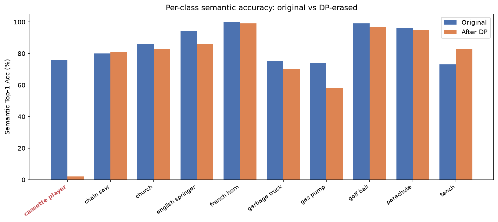
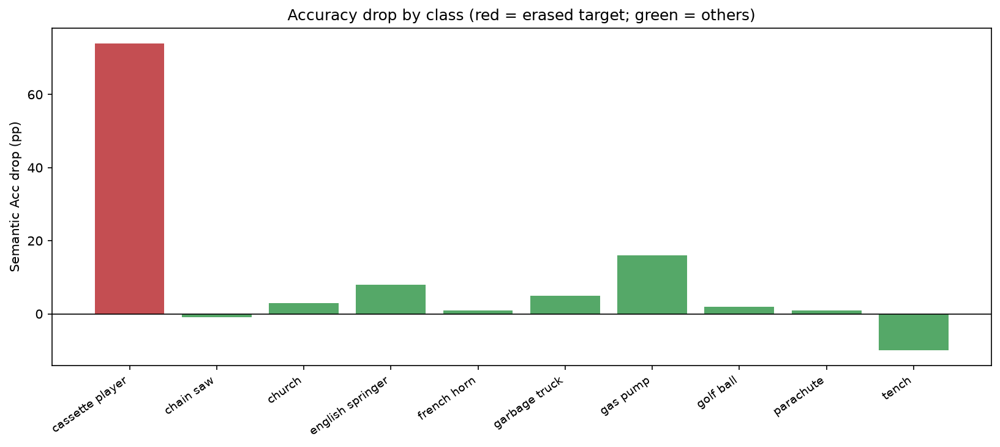
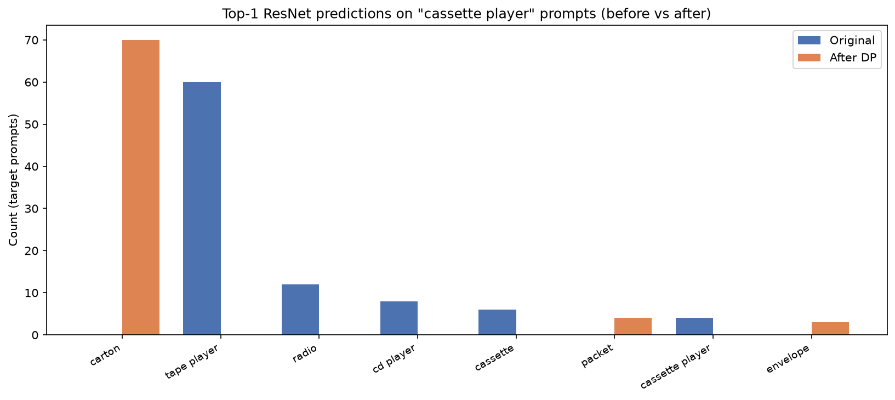

Overview
This report presents a technical reading of Zhang et al. [1] on Double Projections (DP) for concept erasure, together with a reproduction of the Stable Diffusion 1.4 object-erasure run for cassette player (guide: box) on a lab RTX 5090. In the reproduction, ResNet-50 semantic accuracy on the target fell from 76.0% to 2.0% (authors' reference: 78% → 2%), and the average drop on the other nine ImageNette classes was 2.8% (reference: 3.3%). Section 1 develops the method with its mathematical detail (UCE baseline, DP projections, truncation theory); Section 2 situates DP among closed-form editing methods; Sections 3–4 report the reproduction; Section 5 discusses open problems and directions.
1 Method (technical)
1.1 Problem and UCE baseline
Concept erasure edits a pretrained map $W_0 \in \mathbb{R}^{p \times n}$ (in practice, the UNet cross-attention to_v maps) so a target concept embedding $c_i$ is redirected toward a proxy $c_i^{*}$, while non-target embeddings in $C_{\mathrm{pres}} = [c_1, \dots, c_m]$ should stay close to their original images under $W_0$.
Unified Concept Editing (UCE) [2] casts this as a single least-squares objective over an edit set $E$ and a preserve set $P$:
$$\min_{W} \sum_{c_i \in E} \bigl\lVert W c_i - v_i^{*} \bigr\rVert_2^2 \;+\; \sum_{c_j \in P} \bigl\lVert W c_j - W_0 c_j \bigr\rVert_2^2, \qquad v_i^{*} := W_0 c_i^{*}, \tag{1}$$i.e., each target is pushed toward the image of its proxy under the original map, while preserve concepts are kept close to their original outputs. Setting the gradient to zero yields the closed form
$$W = \Bigl( \sum_{c_i \in E} v_i^{*} c_i^{\top} + \sum_{c_j \in P} W_0 c_j c_j^{\top} \Bigr) \Bigl( \sum_{c_i \in E} c_i c_i^{\top} + \sum_{c_j \in P} c_j c_j^{\top} \Bigr)^{-1}, \tag{2}$$a deterministic, training-free update computed purely from concept embeddings (paper Eqs. (5)–(6)).
Why the least-squares fit still leaks (paper Theorem 3.1). A closed form does not by itself control collateral damage. For a single target $c$ edited to $v^{*}$, with $N := cc^{\top} + C_{\mathrm{pres}} C_{\mathrm{pres}}^{\top}$, the UCE update is the rank-one step
$$\Delta W = \bigl( v^{*} - W_0 c \bigr) \frac{c^{\top} N^{-1}}{c^{\top} N^{-1} c}, \tag{3}$$which modifies the weights exactly along the residual direction $v^{*} - W_0 c$. The perturbation of a preserve vector $p$ is therefore parallel to that of the target itself, scaled by the $N^{-1/2}$-weighted inner product ratio $|c^{\top} N^{-1} p| / |c^{\top} N^{-1} c|$. Under the paper’s assumption that, for some $\lambda > 0$, $\langle N^{-1/2} c, N^{-1/2} p \rangle \ge \lambda \langle N^{-1/2} c, N^{-1/2} c \rangle$, one obtains
$$\bigl\lVert \Delta W p \bigr\rVert_2 \;\ge\; \lambda \bigl\lVert \Delta W c \bigr\rVert_2. \tag{4}$$In words: if a preserve vector is sufficiently aligned with the target in the $N^{-1/2}$-weighted geometry, the edit perturbs it at least as much as it perturbs the target. Optimality of a least-squares fit therefore says nothing about which directions absorb the change; DP’s design instead makes preservation a hard constraint rather than a soft penalty.
1.2 DP formulation
DP writes $W = W_0 + \Delta W$ and separates erasure from preservation with two closed-form projections.
Projection 1 (proxy in a safe subspace). Let $S \in \mathbb{R}^{n \times k}$ be a basis for a safe subspace (columns are guide / safe concept directions). The proxy is the orthogonal projection of the target embedding onto that subspace:
$$c_i^{*} = S \bigl( S^{\top} S \bigr)^{+} S^{\top} c_i, \tag{5}$$where $(\cdot)^{+}$ is the Moore–Penrose pseudoinverse. For the Cassette Player object setup in the official code / reference log, the guide is box. When $k = 1$, this step reduces to the usual single-guide UCE-style proxy.
Projection 2 (nullspace constraint; essential). Require that the weight update does not move preserve embeddings:
$$\Delta W \, C_{\mathrm{pres}} = 0. \tag{6}$$With that constraint, erasure is a linearly constrained least-squares problem
$$\min_{\Delta W} \bigl\lVert (W_0 + \Delta W) c_i - W_0 c_i^{*} \bigr\rVert_2^2 \quad \text{s.t.} \quad \Delta W \, C_{\mathrm{pres}} = 0. \tag{7}$$Let $U_2 \in \mathbb{R}^{n \times (n-r)}$ be an orthonormal basis for the left nullspace of $C_{\mathrm{pres}}$ ($r = \operatorname{rank} C_{\mathrm{pres}}$, so $U_2^{\top} C_{\mathrm{pres}} = 0$). Feasible updates are exactly $\Delta W = Z U_2^{\top}$ for some $Z \in \mathbb{R}^{p \times (n-r)}$. Substituting into (7) removes the constraint and reduces the problem to
$$\min_{Z} \bigl\lVert Z x - b \bigr\rVert_2^2, \qquad x := U_2^{\top} c_i \in \mathbb{R}^{n-r}, \qquad b := W_0 \bigl( c_i^{*} - c_i \bigr), \tag{8}$$whose minimum-norm solution (for $x \neq 0$) is $Z = b x^{\top} / \lVert x \rVert_2^2$, giving the closed form
$$\Delta W = W_0 \bigl( c_i^{*} - c_i \bigr) \frac{\bigl( U_2^{\top} c_i \bigr)^{\top}}{\bigl\lVert U_2^{\top} c_i \bigr\rVert_2^2} \; U_2^{\top} \tag{9}$$(paper Eqs. (11)–(12)). The paper notes that multiple-target erasure $C_{\mathrm{tgt}} = [c_1, \dots, c_T]$ is solved identically with a matrix $X = U_2^{\top} C_{\mathrm{tgt}}$.
Guarantee on $C_{\mathrm{pres}}$. If $\Delta W C_{\mathrm{pres}} = 0$ and $W^{\star} = W_0 + \Delta W$, then
$$W^{\star} v = W_0 v \quad \text{for all } v \in \operatorname{col}(C_{\mathrm{pres}}). \tag{10}$$That is exact preservation of the linear map on the preserve embedding subspace (paper Theorem 4.1). It does not by itself guarantee identical ResNet accuracies on sampled images, because generation and classification are nonlinear and noisy.
Both projections are analytical: once embeddings are collected, the edit is deterministic and training-free. Projection 1 is optional (one can hand-pick $c_i^{*}$ as in UCE); Projection 2 is the geometric constraint that makes preservation explicit.
1.3 Truncated preserve sets: preservation and erasure bounds
For large preserve sets, one keeps only the top-$k$ left singular directions of $C_{\mathrm{pres}}$. Write the thin SVD $C_{\mathrm{pres}} = U_1 \Sigma V^{\top}$ with $U_1 = [u_1, \dots, u_r]$ ordered by $\sigma_1 \ge \cdots \ge \sigma_r > 0$, let $U_{1,k} = [u_1, \dots, u_k]$, and let $U_{2,k} \in \mathbb{R}^{n \times (n-k)}$ be an orthonormal basis of $\operatorname{span}(U_{1,k})^{\perp}$. Parameterizing $\Delta W = Z U_{2,k}^{\top}$ enforces $\Delta W U_{1,k} = 0$: the top-$k$ preserve directions are still preserved exactly, and (9) applies with $U_2 \to U_{2,k}$.
Theorem 4.2 (preservation bound). For any preserve column $p_i$ of $C_{\mathrm{pres}}$,
$$\bigl\lVert W^{\star} p_i - W_0 p_i \bigr\rVert_2 \;\le\; \sigma_{k+1}\bigl( C_{\mathrm{pres}} \bigr) \; \bigl\lVert Z^{\star} \bigr\rVert_2, \tag{11}$$where $\sigma_{k+1}$ is the $(k+1)$-st singular value of $C_{\mathrm{pres}}$: the perturbation of a preserved column is controlled by the tail of the spectrum cut off by truncation, scaled by the size of the update. At $k = r$ the right-hand side vanishes and Theorem 4.1 is recovered.
Theorem 4.3 (erasure lower bound). The paper complements this with a matching lower bound on the target side: every target whose embedding has non-negligible projection onto the edited row space $\operatorname{row}(U_{2,k}^{\top} C_{\mathrm{tgt}})$ is guaranteed to be modified, and in the single-target case with $c \notin \operatorname{col}(U_{1,k})$ the pseudoinverse solution achieves the exact fit $W c = W_0 c^{\star}$.
1.4 Embedding-level preservation vs. generation-level accuracy
Theorems 4.1–4.3 are stated on content embeddings. In the SD pipeline the UNet cross-attention actually consumes fused tokens
$$z_j = c_j + q_j, \tag{12}$$where $q_j$ is a positional embedding, and the CLIP text encoder self-attention mixes tokens before they reach the UNet. Consequently $\Delta W z_j = \Delta W q_j \neq 0$ even when $\Delta W c_j = 0$: the edit still moves preserve-token keys/values through their positional component, and the cross-attention softmax turns that into sample-level deviations. Perfect linear preservation is therefore compatible with nonzero generation-level accuracy drops—consistent with the gas pump drop observed in this reproduction (74% → 58%, Table 3) and with the paper’s Appendix C.
1.5 How object erasure is measured
On ImageNette-style object erasure with SD 1.4, images are generated from the original and erased models, then scored with a pretrained ResNet-50 (Top-1). Semantic Acc treats near-duplicate labels (e.g. cassette / tape player / radio) as a match; strict Acc requires the exact label. Lower target Acc after the edit means stronger erasure; lower average drop on the other classes means better preservation under this proxy metric.
2 Related work
DP belongs to a line of post-hoc, training-free edits of generative model weights. TIME [3] introduced a closed-form projection edit for the cross-attention key/value matrices, regularized by a global Frobenius term toward the original weights. UCE [2] generalized this to a least-squares objective that edits a set of concepts while softly preserving a designated concept set, and MEMIT [6] showed how the same family of closed-form updates can be constrained so that previously stored associations remain exactly satisfied. On the fine-tuning side, ESD [5] erases concepts by training the denoiser toward a negatively guided teacher, and concept ablation [4] fine-tunes the model to match an anchor concept on target prompts. DP combines the closed-form efficiency of these methods with an explicit nullspace preservation constraint and, unlike the fine-tuning approaches, comes with analytical preservation guarantees (Theorems 4.1–4.3).
3 Reproduction setup
| Item | Value |
|---|---|
| Host | gpu-user0 |
| Conda env | DP (PyTorch 2.10.0+cu128) |
| GPU | Logical GPU 1, RTX 5090 (CUDA_VISIBLE_DEVICES=1) |
| Base model | Local lean fp16 SD 1.4 (variant="fp16") |
| Target / guide | cassette player / box |
| Preserve set $C_{\mathrm{pres}}$ | 9 other ImageNette classes |
Pipeline (official DP code):
- Generate original SD 1.4 images (1000 samples, ∼24m39s).
- Run the closed-form DP edit (seconds).
- Generate erased images (1000 samples, ∼25m18s).
- Score both sets with ResNet-50 semantic Top-1.
Deviations. The server could not reach Hugging Face, so a local lean fp16
checkpoint was used with variant="fp16" at loading time. Without that flag,
loading failed (missing full-precision VAE weights). Safety-checker weights were not
included in the lean package, so the checker was disabled for this research run. The
linear solve still runs in float32 while the loaded weights are fp16, matching the provided
code path.
4 Results
Table 2 compares the reproduced ResNet-50 numbers to the authors’ Cassette Player DP reference log. Erased semantic Acc matches at 2.0%. Other-class average drop is 2.8% vs. 3.3% in the reference. Original Acc differs slightly (76% vs. 78%); likely contributors include the lean fp16 checkpoint, environment / diffusers version, and sampling variation (these were not ablated separately).
| Metric | Ours | Reference |
|---|---|---|
| Target Orig Acc (semantic) | 76.0% | 78.0% |
| Target Erased Acc (semantic) | 2.0% | 2.0% |
| Target Drop (semantic) | 74.0% | 76.0% |
| Target Orig Acc (strict) | 4.0% | 6.0% |
| Target Erased Acc (strict) | 1.0% | 1.0% |
| Other Orig Acc (avg) | 86.3% | 86.8% |
| Other Erased Acc (avg) | 83.6% | 83.4% |
| Other Average Drop | 2.8% | 3.3% |
Per-class semantic Acc from the same eval (Table 3 excerpt): the target collapses, but preservation is uneven—e.g. gas pump drops from 74% to 58% (16pp) even though it is inside $C_{\mathrm{pres}}$. Average other-class drop therefore hides class-level variation.
| Class | Original | Erased | Drop (pp) |
|---|---|---|---|
| cassette player | 76 | 2 | 74 |
| gas pump | 74 | 58 | 16 |
| english springer | 94 | 86 | 8 |
| church | 86 | 83 | 3 |
| tench | 73 | 83 | −10 |
Figure 1 shows Acc and Acc-drop across all ten classes. Figure 2 restricts to cassette player prompts: ResNet Top-1 labels move away from cassette/tape/radio toward other categories after the edit (guide = box in this setup).

Figure 1 (top): semantic Top-1 Acc (%) before vs. after DP.

Figure 1 (bottom): Acc drop (pp); red = target, green = preserve classes.

Figure 2: ResNet Top-1 labels on cassette player prompts only, before vs. after erasure.
5 Research gaps
Each gap below is stated together with a conjecture and a falsifiable test. Truncation, FLUX, and positional ablations were not re-run in this work; the proposed tests all run on the existing pipeline.
5.1 From the paper
- Truncated $C_{\mathrm{pres}}$: how to pick $k$ (Sec. 4.4, Thms. 4.2–4.3). Theorem 4.2 bounds preserve-side damage by $\sigma_{k+1} \lVert Z^{\star} \rVert_2$, so the tradeoff is readable from the spectrum of $C_{\mathrm{pres}}$. Conjecture: choosing $k$ at a spectral gap of $C_{\mathrm{pres}}$ (a knee in $\sigma_1 \ge \cdots \ge \sigma_r$) should minimize worst-case preserve damage at fixed erasure strength. Test: sweep $k$ on cassette player and check whether the knee in the $\sigma$-curve predicts the best operating point (max per-class drop vs. target Acc).
- Positional coupling (Appendix C). Eq. (12) shows the guarantee holds on $c_j$, while the model consumes $z_j = c_j + q_j$. Conjecture: augmenting $C_{\mathrm{pres}}$ with position-augmented embeddings $z_j$ (or editing the text-encoder embedding layer, as the paper does on FLUX) should shrink gas-pump-style drops. Test: re-run cassette player with $C_{\mathrm{pres}}$ built from $z_j$ and compare per-class drops.
- Generalization beyond $C_{\mathrm{pres}}$ (Appendix J). The guarantee covers only in-matrix concepts. Conjecture: for a held-out concept $p \notin C_{\mathrm{pres}}$, the Theorem 3.1 mechanism reapplies—its drop should scale with its alignment to the target in the $N^{-1/2}$-weighted geometry. Test: measure Acc drop on a held-out class not listed in $C_{\mathrm{pres}}$ and correlate with $\langle N^{-1/2} c, N^{-1/2} p \rangle$.
References
- Zhang, Cheng, Wang, and Liu. Closed-Form Concept Erasure via Double Projections. CVPR 2026.
- R. Gandikota, H. Orgad, Y. Belinkov, J. Materzyńska, and D. Bau. Unified Concept Editing in Diffusion Models (UCE). WACV 2024.
- H. Orgad, B. Kawar, and Y. Belinkov. Editing Implicit Assumptions in Text-to-Image Diffusion Models (TIME). ICCV 2023.
- N. Kumari, B. Zhang, S.-Y. Wang, E. Shechtman, R. Zhang, and J.-Y. Zhu. Ablating Concepts in Text-to-Image Diffusion Models. ICCV 2023.
- R. Gandikota, J. Materzyńska, J. Fiotto-Kaufman, and D. Bau. Erasing Concepts from Diffusion Models (ESD). ICCV 2023.
- K. Meng, A. Sen Sharma, A. Andonian, Y. Belinkov, and D. Bau. Mass-Editing Memory in a Transformer (MEMIT). ICLR 2023.
Reproduction details: SD 1.4, cassette player (guide box), lab GPU (gpu-user0, RTX 5090, logical GPU 1), official DP code building on Unified Concept Editing.